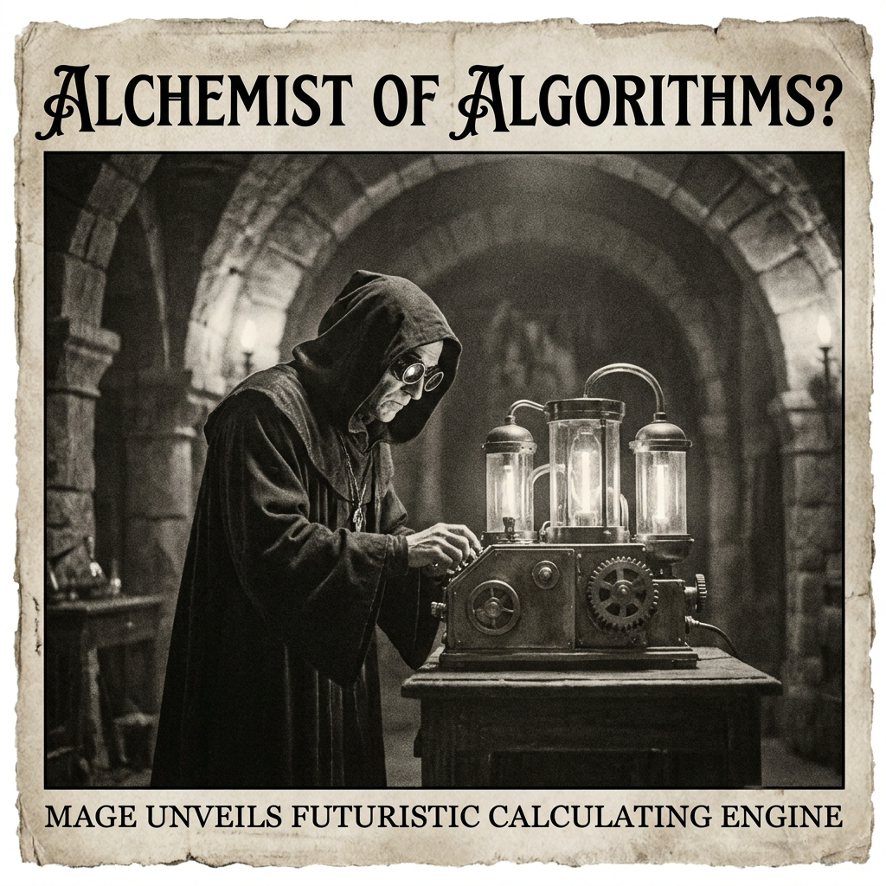

Morning Edition
6:00 AM CDTFinance & Markets
Markets Open May at Record Altitude
U.S. stock futures edged higher after the S&P 500 finished April at a record close, extending a strong month for risk assets while traders watched earnings and policy headlines.
— Source: CNBC, May 1, 2026Apple Forecast Calms Supply-Chain Nerves
Apple delivered a stronger-than-expected outlook, with coverage pointing to resilient iPhone and Mac demand even as investors weigh leadership transition questions and component constraints.
— Sources: Bloomberg / CNBC / The New York Times, May 1, 2026Private Capital Keeps Rewriting the Playbook
The Big 12 is exploring league-wide revenue growth through private capital, Lazard is expanding in private markets with a Campbell Lutyens deal, and states are scrutinizing PE law-firm acquisitions.
— Sources: ESPN / Private Banker International / WSJ, May 1, 2026World & US
Aung San Suu Kyi Moved to House Arrest
Myanmar’s military said detained former leader Aung San Suu Kyi has been moved to house arrest, a symbolic shift that still leaves the junta firmly in control.
— Sources: CNN / BBC, May 1, 2026London Terror-Stabbing Case Moves Forward
A suspect was charged with attempted murder after two Jewish men were stabbed in Golders Green, keeping antisemitism, public safety, and terrorism concerns in sharp focus.
— Sources: The Times of Israel / BBC, May 1, 2026Iran War Cost Estimate Climbs
U.S. officials told CBS News the true cost of the Iran war is closer to $50 billion than $25 billion, with base repairs adding billions to the bill.
— Source: CBS News, May 1, 2026
The Friday Oracle: a gothic code-mage reads tomorrow’s stack traces by candlelight.
"May the clever path be short, the build logs honest, and every strange bug leave behind a better map."— The Developer’s Almanac
Sagittarius Horoscope
Justin, today’s Sagittarius forecast says: protect your focus like production credentials. The Rat-year strategist in you is excellent at finding hidden doors, but May opens best if you avoid tiny leaks of attention—random app spending, noisy tabs, and obligations that don’t deserve root access. Pick one bold thread, trace it cleanly, and let your curiosity compile into momentum. Lucky hex: #5E9CFF. Lucky port: 5173. ✨
— Adapted from Sagittarius horoscopes by VICE, The Times of India, Vogue India, and Chronogram, May 1, 2026Tech, AI, Space & Crypto
-
AI Costs Move from Slide Deck to Headcount
Meta’s Mark Zuckerberg reportedly tied layoffs to AI capital spending, while NPR highlighted a China worker replaced by AI—two reminders that automation is now a boardroom budget line.
— Sources: Forbes / Reuters / NPR, May 1, 2026 -
Mac Minis Become Developer Gold
WIRED reports Mac mini supply could stay tight for months, with AI and developer demand turning tiny desktops into unexpectedly strategic infrastructure.
— Source: WIRED, April 30, 2026 -
Linux Kernel Flaw Raises the Patch Siren
Ars Technica warned of one of the most severe Linux threats in years, with security outlets describing a flaw that can enable root access on major distributions.
— Sources: Ars Technica / The Hacker News, April 30, 2026 -
Cape Canaveral Hits a Launch-Cadence Record
Florida’s Space Coast launched five different rockets in one month, while NASA announced the SpaceX Crew-13 team for a September ISS mission.
— Sources: Florida Today / NASA coverage via Orbital Today, May 1, 2026 -
Crypto Faith Shifts from Price to Plumbing
Bitcoin 2026 coverage suggests the faithful are talking less about tickers and more about adoption, while Coinbase Ventures argues crypto will become so embedded we stop naming it.
— Sources: Bloomberg / Global Venturing, May 1, 2026
Active Reminders
- Test reminder from Nemu (Jan 29)
- Connect Nemu to Notion (Feb 1)
- Research VPN/proxy services for secure agent browsing (Feb 1)
- Create security OpenClaw bot (Feb 2)
- Plaid Integration Research (Feb 4)
- Build Oomi iOS and Android app to connect Nemu to data (Feb 15)